Clean-up round 2: fewer pages, one Library
Before and after, captured headless with Playwright at 1366×860 (desktop) and 390×844 (phone), Development environment, a fresh dev user each, on 2026-10-21. To show the most that changed, the "before" shots have the Sound library, Community feed, Cost estimates and Recipes switches on. Those switches no longer exist, so the "after" shots have only Cost estimates and Recipes on.
LibraryOne page, no section tabs
The Library was a frame around three tabs: My media, Sounds and Feed. With Sounds and Feed gone it is just the media grid, and the Library and Gallery pages are now one page.
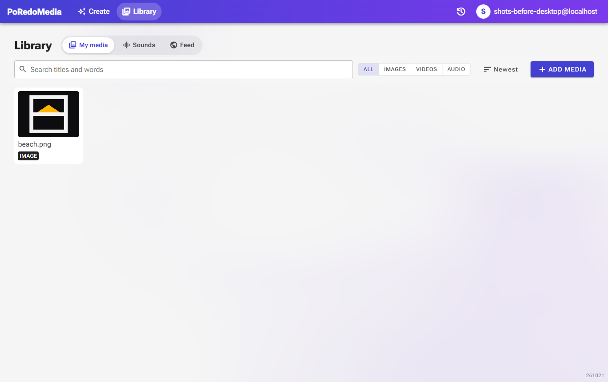
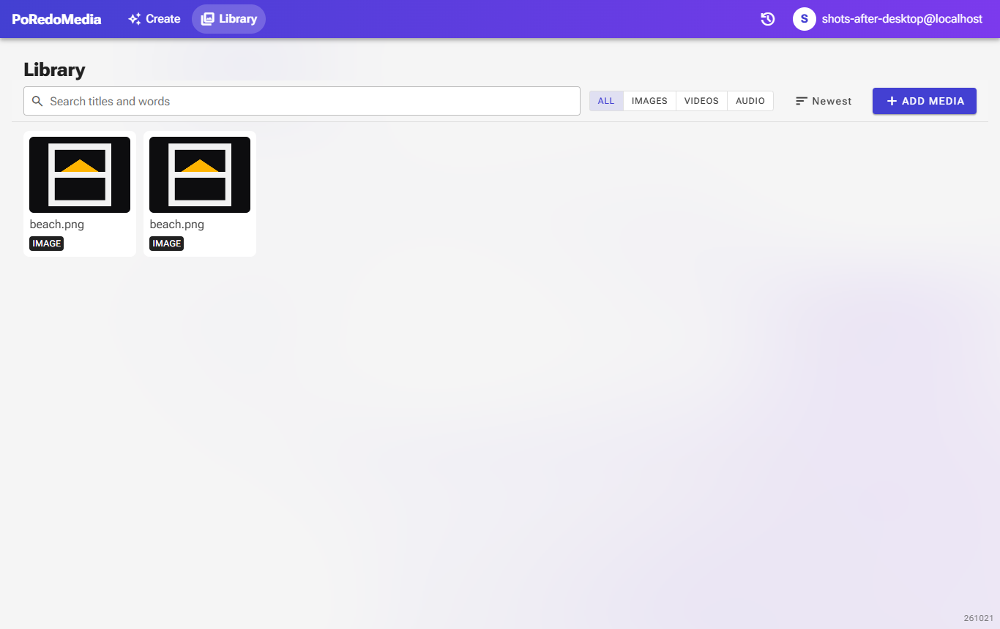
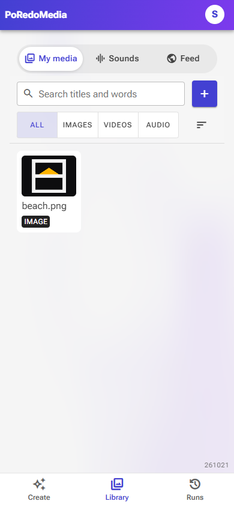
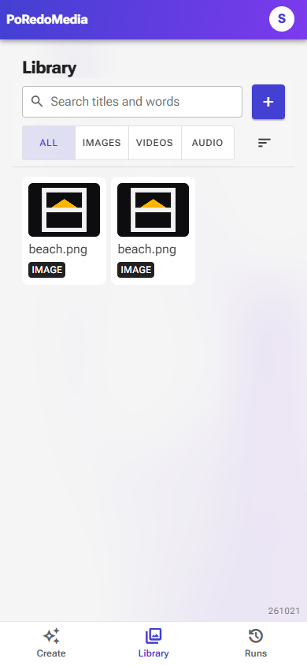
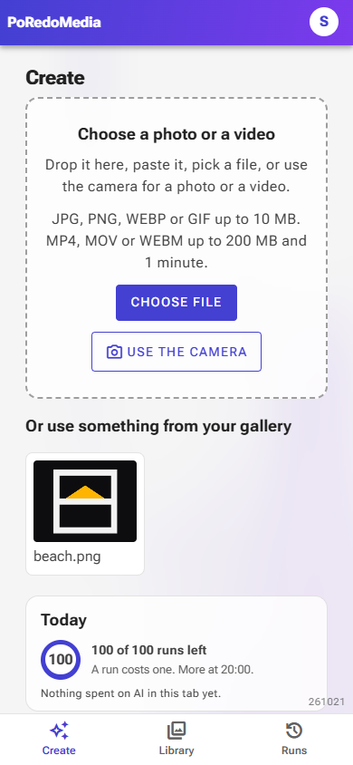
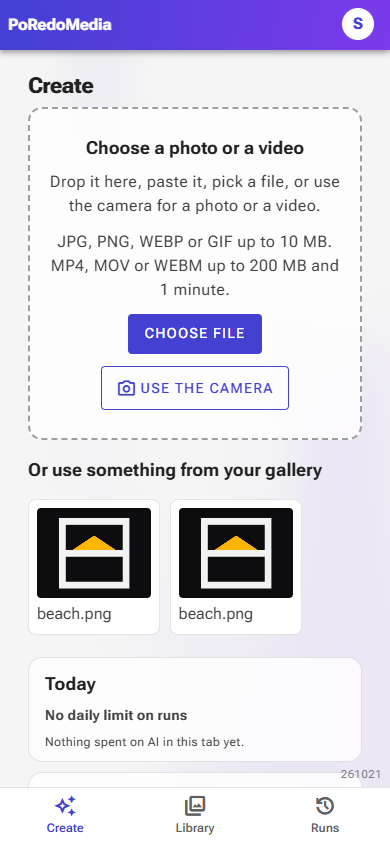
RemovedSounds page and Community feed
These two pages are gone, along with the endpoints, tables and scripts behind them. Meme-ify still picks from the seeded sound library; it just has no page to browse it from. Share links still work.
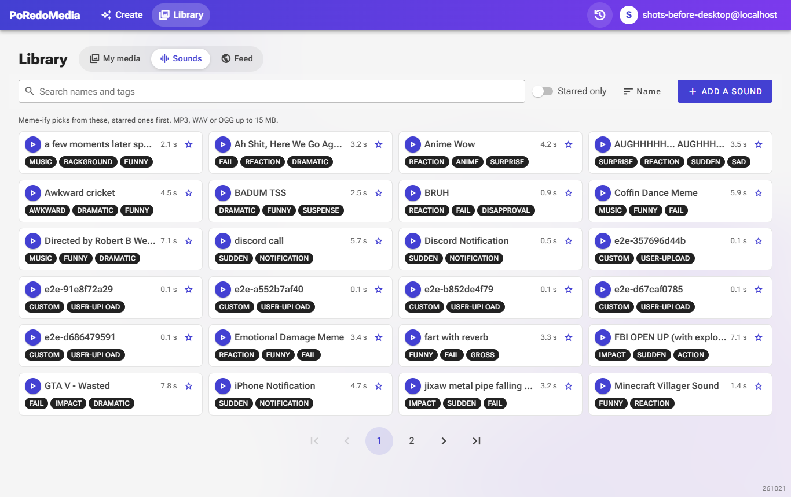
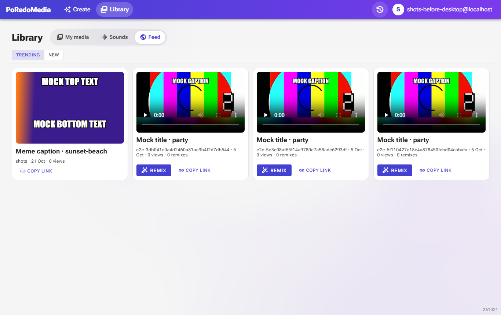
HomeCreate, with no feed peek
The "Trending in the feed" card left the home overview. The spend line stays on the home page when Cost estimates is on.
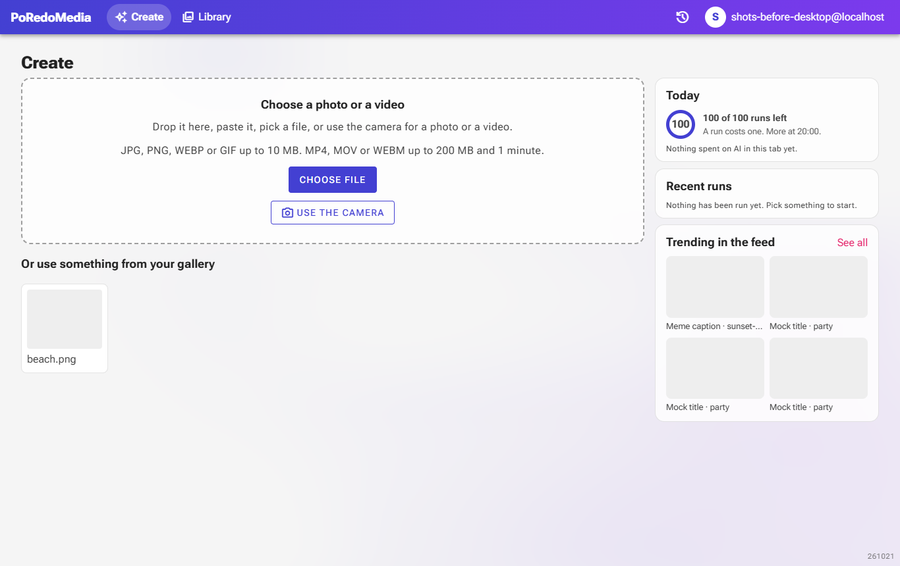
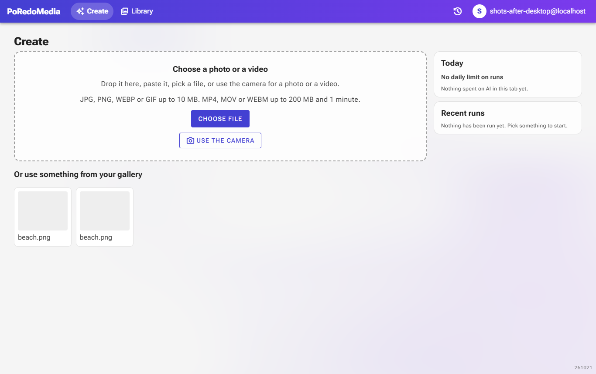
RunsThe spend moved into the Runs drawer
The "≈ $x this session" chip left the header. With Cost estimates on, the same figure appears at the top of the Runs drawer, once anything has been spent (nothing has in these shots).
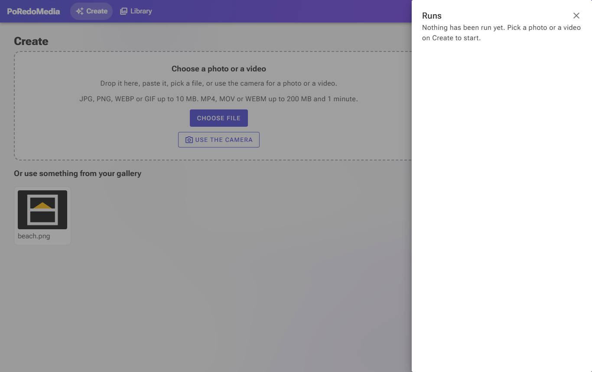
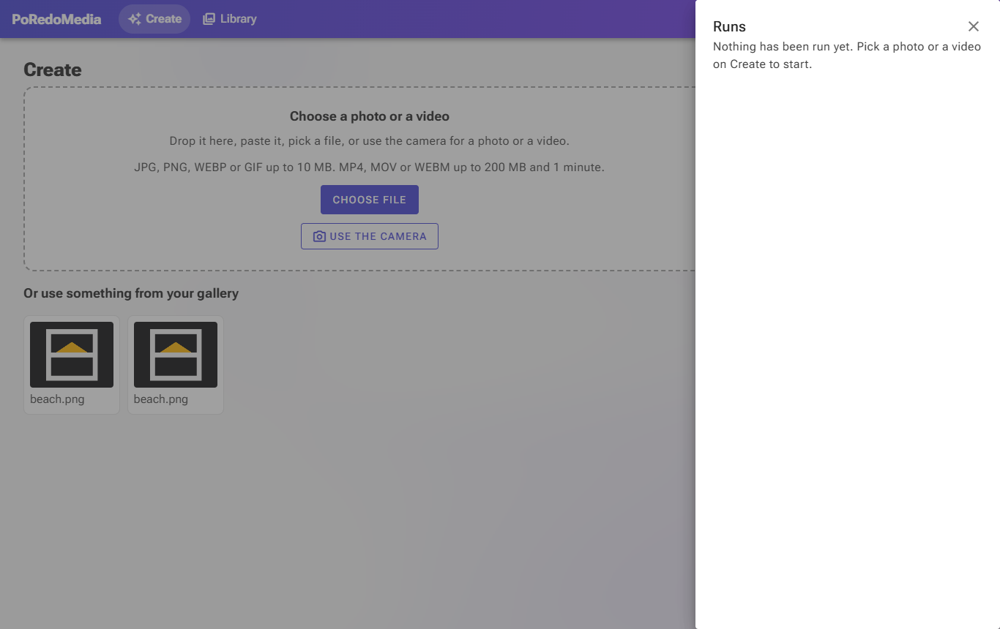
SettingsFour Advanced switches instead of six
The Sound library and Community feed switches went with their features.
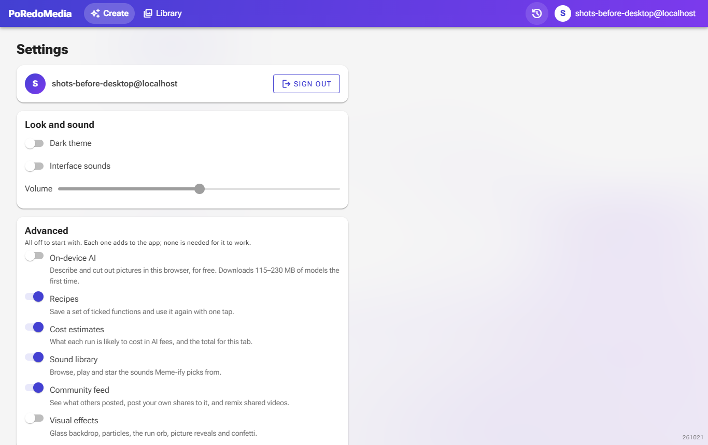
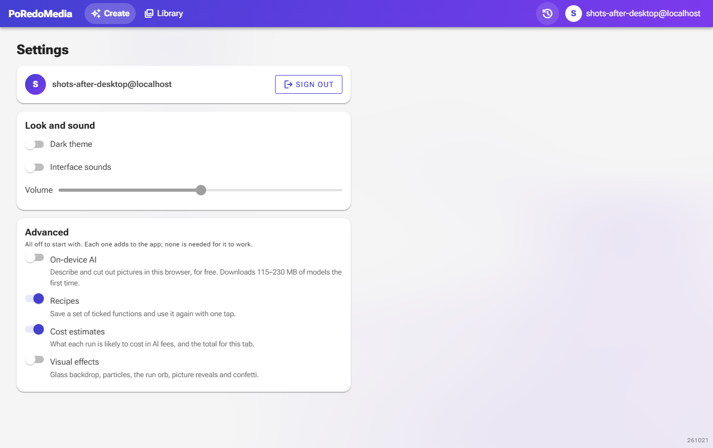
- Removed: Sound library and Community feed switches, the Sounds and Feed pages, the feed toggle in the share panel, the remix banner on Create, the header cost chip.
- Kept: share links, GIF / SRT / roast-audio downloads (now under
/api/media/{id}/export/…), every run function. - Not visible here: the unused on-device text model, Azure Computer Vision and the Gemini frame labeller are gone, and the three video folders are now one
Features/Videoslice.